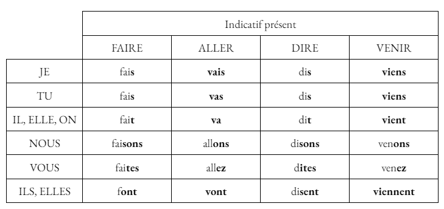
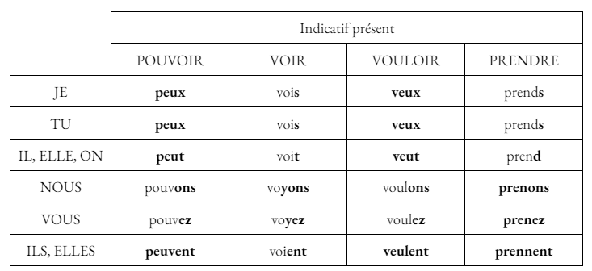
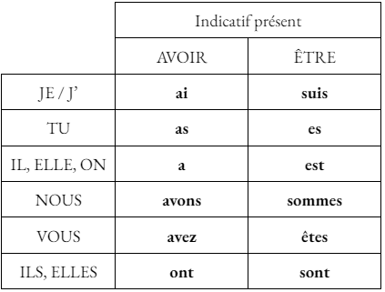

Le Présent
Utilisation
Le présent est utilisé pour décrire une situation actuelle ou proche.
Terminaisons
Les terminaisons des verbes conjugués au présent diffèrent en fonction du groupe.
- Verbes du 1er groupe : -e, -es, -e, -ons, -ez, -ent
- Verbes du 2ème groupe : -is, -is, -it, -issons, -issez, -issent
- Verbes du 3ème groupe : -s, -s, -t, -ons, -ez, -ent
Cas particulier
Pour les verbes en "-cer" (placer, balancer...), il faut ajouter une cédille "ç" à la 1ère personne du pluriel.
Exemple : "Nous plaçons."
Pour les verbes en "-ger" (manger, plonger...), il faut ajouter un "e" entre le radical et la terminaison à la 1ère personne du pluriel.
Exemple : "Nous mangeons."
Pour certains verbes comme "acheter", il faut parfois ajouter un accent grave sur le "e" du radical avec certaines personnes.
Exemple : "Il achète."
Pour certains verbes comme "appeler", il faut doubler la consonne avec certaines personnes.
Exemple : "Tu appelles."
Conjugaison des verbes faire, aller, dire, venir, pouvoir, voir, vouloir et prendre
 
Auxiliaires
Voici la conjugaison des auxiliaires avoir et être au présent de l'indicatif :

Maintenant que tu as bien compris les points de leçons, clique ici pour t'entraîner avec des verbes et des pronoms aléatoires : Exercice d'entraînement du présent